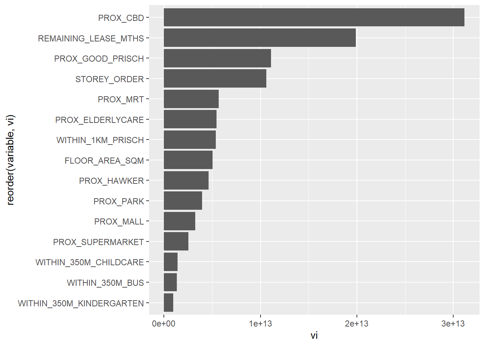

pacman::p_load(performance ,ggstatsplot, rpart.plot, rpart, gtsummary, tidyverse, tidymodels, SpatialML, GWmodel, sf, spdep, tmap)1.0 Getting Started
2.0 Load Data
rs_sf <- read_rds("../../data/rds/HDB_resale.rds")Next, the code chunk below is used to reveal the properties of rs_sf object.
set.seed(1234)
resale_split <- initial_split(
rs_sf,
prop = 5/10,)
train_sf <- training(resale_split)
test_sf <- testing(resale_split)3.0 Geographically Weighted Predictive Models
train_df <- train_sf %>%
st_drop_geometry() %>%
as.data.frame()
test_df <- test_sf %>%
st_drop_geometry() %>%
as.data.frame()4.0 Computing Correlation Matrix
rs_sf1 <- rs_sf %>%
st_drop_geometry()
ggcorrmat(rs_sf1[, 2:17])
5.0 Geographically Weighted Predictive Models
train_df <- train_df %>%
select(-c(PROX_CHAS))
train_sf <- train_sf %>%
select(-c(PROX_CHAS))
test_df <- test_df %>%
select(-c(PROX_CHAS))
test_sf <- test_sf %>%
select(-c(PROX_CHAS))6.0 Model Fitting
rs_mlr <- lm(formula = RESALE_PRICE ~
FLOOR_AREA_SQM + STOREY_ORDER +
REMAINING_LEASE_MTHS + PROX_CBD +
PROX_ELDERLYCARE + PROX_HAWKER +
PROX_MRT + PROX_PARK + PROX_GOOD_PRISCH + PROX_MALL + PROX_SUPERMARKET + WITHIN_350M_KINDERGARTEN +
WITHIN_350M_CHILDCARE + WITHIN_350M_BUS +
WITHIN_1KM_PRISCH, data=train_df)7.0 Model Evaluation
train_sp <- as_Spatial(train_sf)
train_spclass : SpatialPointsDataFrame
features : 7950
extent : 11597.31, 42623.63, 28217.39, 48741.06 (xmin, xmax, ymin, ymax)
crs : +proj=tmerc +lat_0=1.36666666666667 +lon_0=103.833333333333 +k=1 +x_0=28001.642 +y_0=38744.572 +ellps=WGS84 +towgs84=0,0,0,0,0,0,0 +units=m +no_defs
variables : 16
names : RESALE_PRICE, FLOOR_AREA_SQM, STOREY_ORDER, REMAINING_LEASE_MTHS, PROX_CBD, PROX_ELDERLYCARE, PROX_HAWKER, PROX_MRT, PROX_PARK, PROX_GOOD_PRISCH, PROX_MALL, PROX_SUPERMARKET, WITHIN_350M_KINDERGARTEN, WITHIN_350M_CHILDCARE, WITHIN_350M_BUS, ...
min values : 218000, 74, 1, 555, 0.999393538715878, 1.98943787433087e-08, 0.0333358643817954, 0.0220407324774434, 0.0441643212802781, 0.0652540365486641, 0, 1.21715176356525e-07, 0, 0, 0, ...
max values : 1186888, 126, 17, 1164, 19.6500691667807, 3.30163731686804, 2.80329916478192, 2.13060636038504, 2.41313695915468, 10.6223726149914, 2.26056404492346, 1.57131703651196, 7, 20, 18, ... test_sp <- as_Spatial(test_sf)
test_spclass : SpatialPointsDataFrame
features : 7951
extent : 11597.31, 42623.63, 28287.8, 48741.06 (xmin, xmax, ymin, ymax)
crs : +proj=tmerc +lat_0=1.36666666666667 +lon_0=103.833333333333 +k=1 +x_0=28001.642 +y_0=38744.572 +ellps=WGS84 +towgs84=0,0,0,0,0,0,0 +units=m +no_defs
variables : 16
names : RESALE_PRICE, FLOOR_AREA_SQM, STOREY_ORDER, REMAINING_LEASE_MTHS, PROX_CBD, PROX_ELDERLYCARE, PROX_HAWKER, PROX_MRT, PROX_PARK, PROX_GOOD_PRISCH, PROX_MALL, PROX_SUPERMARKET, WITHIN_350M_KINDERGARTEN, WITHIN_350M_CHILDCARE, WITHIN_350M_BUS, ...
min values : 230888, 74, 1, 546, 1.00583660772922, 3.34897933104965e-07, 0.0333358643817954, 0.0414043955932523, 0.0441643212802781, 0.0907500295577619, 0, 1.21715176356525e-07, 0, 0, 0, ...
max values : 1088000, 138, 14, 1151, 19.632402730488, 3.30163731686804, 2.86763031236184, 2.13060636038504, 2.41313695915468, 10.6169590126272, 2.27100643784442, 1.53786629004208, 7, 16, 18, ... coords <- st_coordinates(rs_sf)
coords_train <- st_coordinates(train_sf)
coords_test <- st_coordinates(test_sf)8.0 Model Fitting
set.seed(1234)
rs_rp <- rpart(formula = RESALE_PRICE ~
FLOOR_AREA_SQM + STOREY_ORDER +
REMAINING_LEASE_MTHS + PROX_CBD +
PROX_ELDERLYCARE + PROX_HAWKER +
PROX_MRT + PROX_PARK + PROX_GOOD_PRISCH + PROX_MALL + PROX_SUPERMARKET + WITHIN_350M_KINDERGARTEN +
WITHIN_350M_CHILDCARE + WITHIN_350M_BUS +
WITHIN_1KM_PRISCH, data=train_df)
rs_rpn= 7950
node), split, n, deviance, yval
* denotes terminal node
1) root 7950 1.139546e+14 433705.6
2) PROX_CBD>=7.974483 6665 4.472144e+13 403736.0
4) REMAINING_LEASE_MTHS< 1020.5 4228 1.573100e+13 370187.4
8) PROX_GOOD_PRISCH>=3.629405 2271 3.851141e+12 340796.1 *
9) PROX_GOOD_PRISCH< 3.629405 1957 7.641480e+12 404294.6 *
5) REMAINING_LEASE_MTHS>=1020.5 2437 1.597594e+13 461940.1
10) PROX_CBD>=10.40657 2331 9.762718e+12 451754.4
20) PROX_GOOD_PRISCH>=4.866983 1123 2.801796e+12 423493.8 *
21) PROX_GOOD_PRISCH< 4.866983 1208 5.230246e+12 478026.4 *
11) PROX_CBD< 10.40657 106 6.532500e+11 685929.1 *
3) PROX_CBD< 7.974483 1285 3.219685e+13 589151.4
6) REMAINING_LEASE_MTHS< 930.5 745 6.613365e+12 486637.6
12) FLOOR_AREA_SQM< 98.5 451 2.446537e+12 442460.5 *
13) FLOOR_AREA_SQM>=98.5 294 1.936449e+12 554405.7 *
7) REMAINING_LEASE_MTHS>=930.5 540 6.952722e+12 730582.5
14) REMAINING_LEASE_MTHS< 1071.5 314 2.461969e+12 676641.3 *
15) REMAINING_LEASE_MTHS>=1071.5 226 2.307737e+12 805527.4 *9.0 Model Evaluation
rpart.plot(rs_rp)
9.1 Calibrating Random Forest Model
set.seed(1234)
rs_rf <- ranger(formula = RESALE_PRICE ~
FLOOR_AREA_SQM + STOREY_ORDER +
REMAINING_LEASE_MTHS + PROX_CBD +
PROX_ELDERLYCARE + PROX_HAWKER +
PROX_MRT + PROX_PARK + PROX_GOOD_PRISCH + PROX_MALL + PROX_SUPERMARKET + WITHIN_350M_KINDERGARTEN +
WITHIN_350M_CHILDCARE + WITHIN_350M_BUS +
WITHIN_1KM_PRISCH, data=train_df, importance = "impurity")
rs_rfRanger result
Call:
ranger(formula = RESALE_PRICE ~ FLOOR_AREA_SQM + STOREY_ORDER + REMAINING_LEASE_MTHS + PROX_CBD + PROX_ELDERLYCARE + PROX_HAWKER + PROX_MRT + PROX_PARK + PROX_GOOD_PRISCH + PROX_MALL + PROX_SUPERMARKET + WITHIN_350M_KINDERGARTEN + WITHIN_350M_CHILDCARE + WITHIN_350M_BUS + WITHIN_1KM_PRISCH, data = train_df, importance = "impurity")
Type: Regression
Number of trees: 500
Sample size: 7950
Number of independent variables: 15
Mtry: 3
Target node size: 5
Variable importance mode: impurity
Splitrule: variance
OOB prediction error (MSE): 738005688
R squared (OOB): 0.9485198 vi <- as.data.frame(rs_rf$variable.importance)
vi$variable <- rownames(vi)
vi <- vi %>%
rename(vi = "rs_rf$variable.importance")ggplot(data = vi,
aes(x = vi,
y = reorder(variable, vi))) +
geom_bar(stat="identity")
10.0 Model Evaluation
set.seed(1234)
rs_grf <- grf(formula = RESALE_PRICE ~
FLOOR_AREA_SQM + STOREY_ORDER +
REMAINING_LEASE_MTHS + PROX_CBD +
PROX_ELDERLYCARE + PROX_HAWKER +
PROX_MRT + PROX_PARK + PROX_GOOD_PRISCH + PROX_MALL + PROX_SUPERMARKET + WITHIN_350M_KINDERGARTEN +
WITHIN_350M_CHILDCARE + WITHIN_350M_BUS +
WITHIN_1KM_PRISCH, data=train_df, kernel="adaptive", coords= coords_train, bw.min = 25, bw.max = 60, step = 1, nthreads = 16, forest = FALSE, weighted = TRUE)test_df <- cbind(test_sf, coords_test) %>%
st_drop_geometry()grf_pred <- predict.grf(rs_grf,
test_df,
x.var.name="X",
y.var.name="Y",
local.w=1,
global.w=0)grf_pred <- read_rds("../../data/models/grf_pred.rds")
grf_pred_df <- as.data.frame(grf_pred)test_pred <- test_df %>%
select(RESALE_PRICE) %>%
cbind(grf_pred_df)rf_pred <- predict(rs_rf, test_df)rf_pred_df <- as.data.frame(rf_pred$predictions) %>%
rename(rf_pred = "rf_pred$predictions")test_pred <- cbind(test_pred, rf_pred_df)mlr_pred <- predict(rs_mlr, test_df)mlr_pred_df <- as.data.frame(mlr_pred) %>%
rename(mlr_pred = "mlr_pred")test_pred <- cbind(test_pred, mlr_pred_df)yardstick::rmse(test_pred, RESALE_PRICE, mlr_pred)mc <- test_pred %>%
pivot_longer(cols = c(2:4),
names_to = "models",
values_to = "predicted")